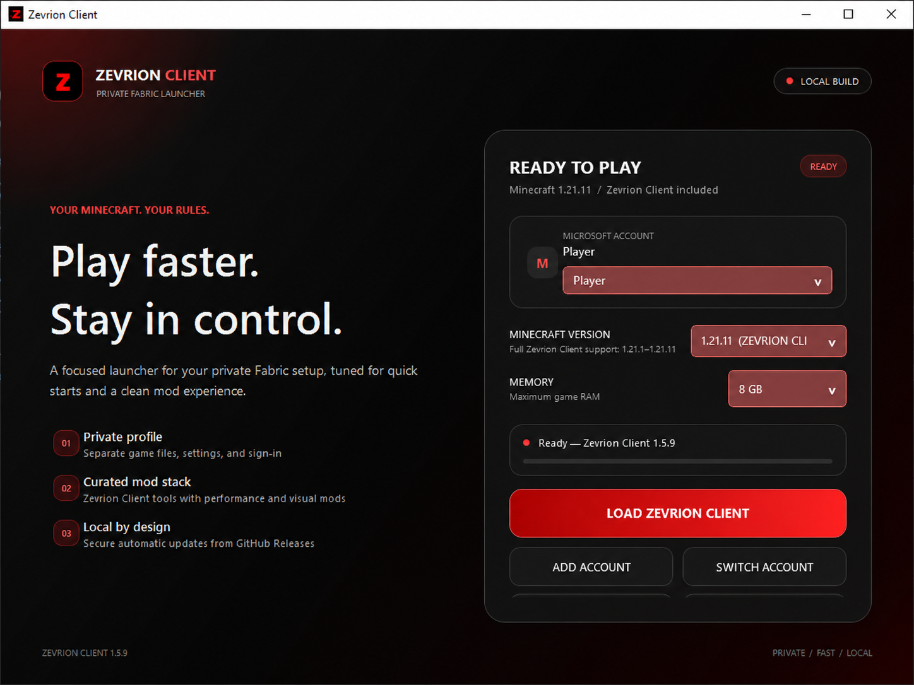

Private launcher profile
Zevrion Client keeps its game files, settings, authentication cache, and mods in its own local profile.
A focused launcher for your private Fabric setup, tuned for quick starts, smooth gameplay, and a clean mod experience.

Launch your own Minecraft profile with a carefully selected Fabric stack and compact in-game controls.
Zevrion Client keeps its game files, settings, authentication cache, and mods in its own local profile.
Time-budgeted, packet-driven Base Finder and Block ESP scans load nearby chunks quickly without large frame spikes.
Open the in-game F8 panel to manage visual tools, HUD options, and your personal settings.
Microsoft sign-in happens inside the launcher. Saved account data is protected on your Windows account.
Choose your memory, open the game folder, and launch from one clean screen.
The release is self-contained. Keep the executable and bundled-mods folder together after extracting.
Download Zevrion ClientSave the current Windows x64 ZIP from this page.
Right-click the ZIP, choose Extract All, and keep the bundled-mods folder beside the app.
Run Zevrion Client.exe and choose how much memory Minecraft can use. This personal build is not code-signed, so Windows may show an unknown-publisher warning.
Use your Microsoft account locally, then press Play Zevrion Client.
Compare the ZIP file with the SHA-256 checksum shown here. The public download contains compiled files only—never the Zevrion Client source project.
9E3356AEE53AA9F276D55E3613377BDF93327CB0CF56C6234606B96F7A0EA34A
Zevrion Client 1.5.10 / Windows x64
Download the latest Zevrion Client release for Windows.